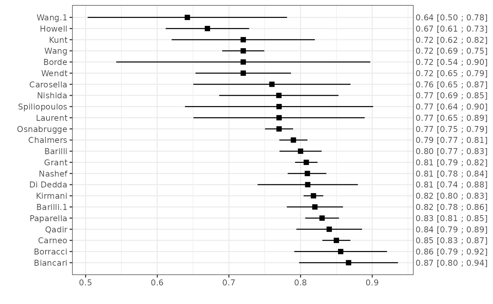

The function calculates (transformed versions of) the concordance (c-) statistic with the corresponding sampling variance.
Usage
ccalc(
cstat,
cstat.se,
cstat.cilb,
cstat.ciub,
cstat.cilv,
sd.LP,
N,
O,
Po,
data,
slab,
subset,
g = NULL,
level = 0.95,
approx.se.method = 4,
...
)Arguments
- cstat
vector to specify the estimated c-statistics.
- cstat.se
Optional vector to specify the corresponding standard errors.
- cstat.cilb
Optional vector to specify the lower limits of the confidence interval.
- cstat.ciub
Optional vector to specify the upper limits of the confidence interval.
- cstat.cilv
Optional vector to specify the levels of aformentioned confidence interval limits. (default: 0.95, which corresponds to the 95% confidence interval).
- sd.LP
Optional vector to specify the standard deviations of the linear predictor (prognostic index).
- N
Optional vector to specify the sample/group sizes.
- O
Optional vector to specify the total number of observed events.
- Po
Optional vector to specify the observed event probabilities.
- data
Optional data frame containing the variables given to the arguments above.
- slab
Optional vector with labels for the studies.
- subset
Optional vector indicating the subset of studies that should be used. This can be a logical vector or a numeric vector indicating the indices of the studies to include.
- g
a quoted string that is the function to transform estimates of the c-statistic; see the details below.
- level
Optional numeric to specify the level for the confidence interval, default
0.95.- approx.se.method
integer specifying which method should be used for estimating the standard error of the c-statistic (Newcombe, 2006). So far, only method
2and method4(default) have been implemented.- ...
Additional arguments.
Value
An object of class c("mm_perf","data.frame") with the following columns:
- "theta"
The (transformed) c-statistics.
- "theta.se"
Standard errors of the (transformed) c-statistics.
- "theta.cilb"
Lower confidence interval of the (transformed) c-statistics. The level is specified in
level. Intervals are calculated on the same scale asthetaby assuming a Normal distribution.- "theta.ciub"
Upper confidence interval of the (transformed) c-statistics. The level is specified in
level. Intervals are calculated on the same scale asthetaby assuming a Normal distribution.- "theta.source"
Method used for calculating the (transformed) c-statistic.
- "theta.se.source"
Method used for calculating the standard error of the (transformed) c-statistic.
Details
The c-statistic is a measure of discrimination, and indicates the ability of a prediction model to distinguish between patients developing and not developing the outcome. The c-statistic typically ranges from 0.5 (no discriminative ability) to 1 (perfect discriminative ability).
By default, the function ccalc will derive the c-statistic of each study, together with
the corresponding standard error and 95% confidence interval. However, it is also possible to calculate transformed
versions of the c-statistic. Appropriate standard errors are then derived using the Delta method.
For instance, the logit transformation can be applied by specifying g="log(cstat/(1-cstat))".
Restoring the c-statistic
For studies where the c-statistic is missing, it is estimated from the standard deviation of the linear predictor
(theta.source="std.dev(LP)"). The corresponding method is described by White et al. (2015).
Restoring the standard error of the c-statistic
When missing, the standard error of the c-statistic can be estimated from the confidence interval. Alternatively,
the standard error can be approximated from a combination of the reported c-statistic, the total sample size and
the total number of events (Newcombe, 2006). This can be achieved by adopting (a modification of) the method
proposed by Hanley and McNeil, as specified in approx.se.method.
References
Debray TPA, Damen JAAG, Snell KIE, Ensor J, Hooft L, Reitsma JB, et al. A guide to systematic review and meta-analysis of prediction model performance. BMJ. 2017;356:i6460.
Debray TPA, Damen JAAG, Riley R, Snell KIE, Reitsma JB, Hooft L, et al. A framework for meta-analysis of prediction model studies with binary and time-to-event outcomes. Stat Methods Med Res. 2018; In press.
Hanley JA, McNeil BJ. The meaning and use of the area under a receiver operating characteristic (ROC) curve. Radiology. 1982; 143(1):29--36.
Newcombe RG. Confidence intervals for an effect size measure based on the Mann-Whitney statistic. Part 2: asymptotic methods and evaluation. Stat Med. 2006; 25(4):559--73.
Snell KI, Ensor J, Debray TP, Moons KG, Riley RD. Meta-analysis of prediction model performance across multiple studies: Which scale helps ensure between-study normality for the C -statistic and calibration measures? Statistical Methods in Medical Research. 2017.
White IR, Rapsomaniki E, the Emerging Risk Factors Collaboration. Covariate-adjusted measures of discrimination for survival data. Biom J. 2015;57(4):592--613.
Examples
######### Validation of prediction models with a binary outcome #########
data(EuroSCORE)
# Calculate the c-statistic and its standard error
est1 <- ccalc(cstat = c.index, cstat.se = se.c.index, cstat.cilb = c.index.95CIl,
cstat.ciub = c.index.95CIu, N = n, O = n.events, data = EuroSCORE, slab = Study)
est1
#> theta theta.se theta.cilb theta.ciub theta.source
#> Nashef 0.8095 0.01377576 0.7820000 0.8360000 c-statistic
#> Biancari 0.8670 0.03520473 0.7980000 0.9360000 c-statistic
#> Di Dedda 0.8100 0.03571494 0.7400000 0.8800000 c-statistic
#> Chalmers 0.7900 0.01000000 0.7704004 0.8095996 c-statistic
#> Grant 0.8080 0.00800000 0.7923203 0.8236797 c-statistic
#> Carneo 0.8500 0.01000000 0.8304004 0.8695996 c-statistic
#> Kunt 0.7200 0.05100000 0.6200418 0.8199582 c-statistic
#> Kirmani 0.8180 0.00700000 0.8042803 0.8317197 c-statistic
#> Howell 0.6700 0.02972796 0.6117343 0.7282657 c-statistic
#> Wang 0.7200 0.01500000 0.6906005 0.7493995 c-statistic
#> Borde 0.7200 0.09044574 0.5427296 0.8972704 c-statistic
#> Qadir 0.8400 0.02338189 0.7941723 0.8858277 c-statistic
#> Spiliopoulos 0.7700 0.06700000 0.6386824 0.9013176 c-statistic
#> Wendt 0.7200 0.03400000 0.6533612 0.7866388 c-statistic
#> Laurent 0.7700 0.06100000 0.6504422 0.8895578 c-statistic
#> Wang.1 0.6420 0.07100000 0.5028426 0.7811574 c-statistic
#> Nishida 0.7697 0.04247895 0.6864428 0.8529572 c-statistic
#> Barilli 0.8000 0.01500000 0.7706005 0.8293995 c-statistic
#> Barilli.1 0.8200 0.02000000 0.7808007 0.8591993 c-statistic
#> Paparella 0.8300 0.01200000 0.8064804 0.8535196 c-statistic
#> Carosella 0.7600 0.05600000 0.6502420 0.8697580 c-statistic
#> Borracci 0.8560 0.03300000 0.7913212 0.9206788 c-statistic
#> Osnabrugge 0.7700 0.01000000 0.7504004 0.7895996 c-statistic
#> theta.se.source
#> Nashef Confidence Interval
#> Biancari Confidence Interval
#> Di Dedda Confidence Interval
#> Chalmers Standard Error
#> Grant Standard Error
#> Carneo Standard Error
#> Kunt Standard Error
#> Kirmani Standard Error
#> Howell Newcombe (Method 4)
#> Wang Standard Error
#> Borde Newcombe (Method 4)
#> Qadir Newcombe (Method 4)
#> Spiliopoulos Standard Error
#> Wendt Standard Error
#> Laurent Standard Error
#> Wang.1 Standard Error
#> Nishida Newcombe (Method 4)
#> Barilli Standard Error
#> Barilli.1 Standard Error
#> Paparella Standard Error
#> Carosella Standard Error
#> Borracci Standard Error
#> Osnabrugge Standard Error
# Calculate the logit c-statistic and its standard error
est2 <- ccalc(cstat = c.index, cstat.se = se.c.index, cstat.cilb = c.index.95CIl,
cstat.ciub = c.index.95CIu, N = n, O = n.events, data = EuroSCORE, slab = Study,
g = "log(cstat/(1-cstat))")
est2
#> theta theta.se theta.cilb theta.ciub theta.source
#> Nashef 1.4467646 0.08964514 1.27735968 1.6287622 c-statistic
#> Biancari 1.8746898 0.33390703 1.37384090 2.6827324 c-statistic
#> Di Dedda 1.4500102 0.24144872 1.04596856 1.9924302 c-statistic
#> Chalmers 1.3249254 0.06027728 1.20678413 1.4430667 c-statistic
#> Grant 1.4370667 0.05156766 1.33599594 1.5381374 c-statistic
#> Carneo 1.7346011 0.07843137 1.58087839 1.8883237 c-statistic
#> Kunt 0.9444616 0.25297619 0.44863739 1.4402858 c-statistic
#> Kirmani 1.5028556 0.04701900 1.41070011 1.5950112 c-statistic
#> Howell 0.7081851 0.13445481 0.44465847 0.9717116 c-statistic
#> Wang 0.9444616 0.07440476 0.79863096 1.0902923 c-statistic
#> Borde 0.9444616 0.44863958 0.06514418 1.8237790 c-statistic
#> Qadir 1.6582281 0.17397241 1.31724841 1.9992077 c-statistic
#> Spiliopoulos 1.2083112 0.37831733 0.46682285 1.9497996 c-statistic
#> Wendt 0.9444616 0.16865079 0.61391213 1.2750111 c-statistic
#> Laurent 1.2083112 0.34443817 0.53322480 1.8833976 c-statistic
#> Wang.1 0.5840553 0.30891592 -0.02140877 1.1895194 c-statistic
#> Nishida 1.2066180 0.23963947 0.73693330 1.6763027 c-statistic
#> Barilli 1.3862944 0.09375000 1.20254774 1.5700410 c-statistic
#> Barilli.1 1.5163475 0.13550136 1.25076971 1.7819253 c-statistic
#> Paparella 1.5856273 0.08504607 1.41894004 1.7523145 c-statistic
#> Carosella 1.1526795 0.30701754 0.55093618 1.7544228 c-statistic
#> Borracci 1.7824571 0.26771807 1.25773930 2.3071748 c-statistic
#> Osnabrugge 1.2083112 0.05646527 1.09764130 1.3189811 c-statistic
#> theta.se.source
#> Nashef Confidence Interval
#> Biancari Confidence Interval
#> Di Dedda Confidence Interval
#> Chalmers Standard Error
#> Grant Standard Error
#> Carneo Standard Error
#> Kunt Standard Error
#> Kirmani Standard Error
#> Howell Newcombe (Method 4)
#> Wang Standard Error
#> Borde Newcombe (Method 4)
#> Qadir Newcombe (Method 4)
#> Spiliopoulos Standard Error
#> Wendt Standard Error
#> Laurent Standard Error
#> Wang.1 Standard Error
#> Nishida Newcombe (Method 4)
#> Barilli Standard Error
#> Barilli.1 Standard Error
#> Paparella Standard Error
#> Carosella Standard Error
#> Borracci Standard Error
#> Osnabrugge Standard Error
# Display the results of all studies in a forest plot
plot(est1)
